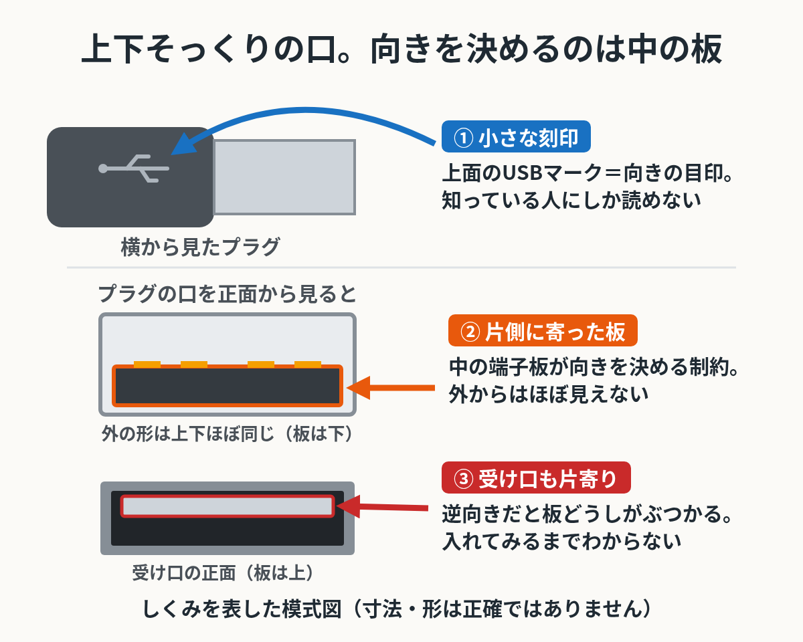
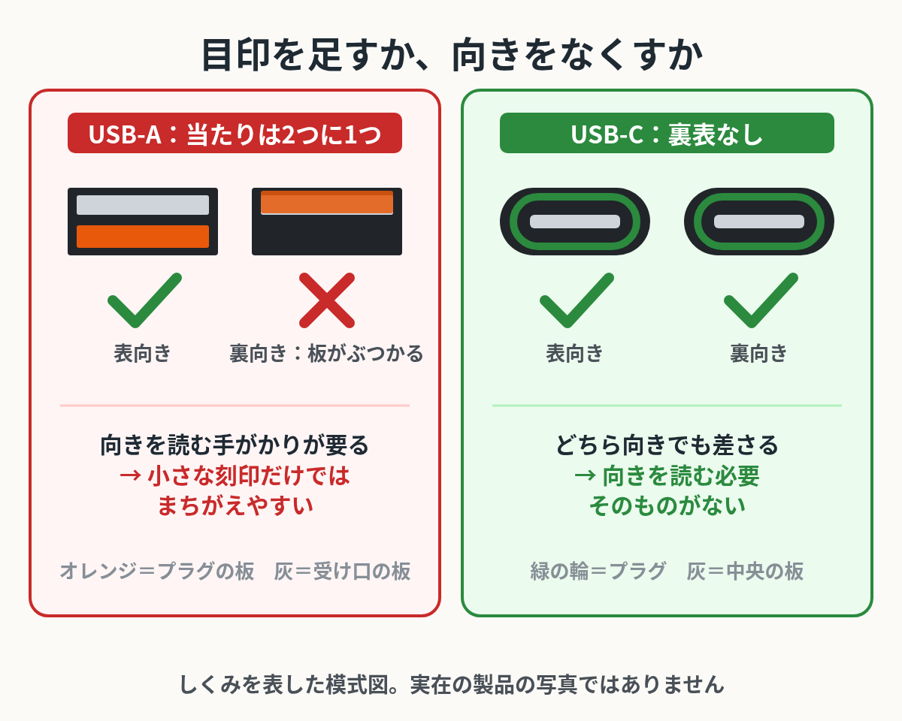

第12回 家電・機器（コネクタ）
「どちら向き？」のUSB-Aと、裏表のないUSB-C（向きを読む必要をなくす）


何がどう行為を誘っているか
USB-Aのプラグは、平たい長方形の金属の口です。外から見ると上下がほぼ同じ形ですが、中の端子の板が片側に寄っているため、差さる向きは1つだけです。
穴と形が合えば差しこめること自体は、プラグと受け口の関係で決まる性質で、ギブソンのいうアフォーダンスにあたります。一方、「どちら向きか」を知らせるのは手がかり（シグニファイア）の仕事です。USB 2.0の仕様書は、プラグの上面にUSBのマークを刻み、差しこむときにそのマークが見えるように受け口を向けると定めています。見分けやすく、向きを合わせやすくするための目印だと書かれています。
ただ、この目印は小さく、意味を知っている人にしか読めません。向きを決めている片寄りの板（制約）も、差しこもうとしてぶつかるまで見えません。ノーマンは、形で行為をしぼる物理的な制約は、行為の前に見て読み取れるときにいちばんよく効く、と述べています。USB-Aは、制約はあるのに、それが見えない例です。
惜しい例・悪い例との対比
USBの開発を率いたインテルのアジェイ・バット（Ajay Bhatt）さんは、裏表どちらでも差せる形も一度は検討したと話しています。2015年のPCWorldの取材では、裏返せるようにするには線が倍になり、費用も倍になる、当時はそれが受け入れられなかったと説明し、「振り返れば、しくじった（in hindsight we blew it）」と語りました。2019年のNPRの取材でも、いちばんの不満は向きがあることだと認めています。
答えの1つが、2014年に仕様が完成したUSB Type-C（USB-C）です。USB-IFは主な特長として、プラグの向きもケーブルの向きも問わないこと（reversible plug orientation and cable direction）を挙げています。向きを示す目印を足すのではなく、向きを読む必要そのものをなくしたわけです。ノーマンも円筒形の電池について、どちら向きでも働く接点にして向きを無関係にするか、一方向にしか入らない形にするかを提案し、古い規格が広く出回っていて改められない状態を「レガシー問題」と呼びました。USB-CもUSB-Aの口とは直接つながらず、仕様では変換ケーブルやアダプタが用意されています。
使いどころのひとこと
スライドや授業で「見分けにくい2択」を見つけたら、目印を足す前に「どちらでもよくできないか」を考えてみてください。授業では、USB-AとUSB-Cを並べて「どちらが向きを教えてくれる？」と聞くと、手がかりを足す設計と、手がかりをいらなくする設計の違いを話せます。研究サイトやフォームでも、全角・半角やハイフンの有無のような書き方の違いを受け取る側で吸収すると、注意書きを1つ減らせます。
出典
- USB Implementers Forum (2000). Universal Serial Bus Specification Revision 2.0.（6.5.1 USB Icon Location：プラグ上面のUSBマークと向き合わせ）
- USB 3.0 Promoter Group (2014, August 12). USB 3.0 Promoter Group Announces USB Type-C Connector Ready for Production（プレスリリース、Internet Archive 保存版）.
- USB Implementers Forum. USB Type-C® Cable and Connector Specification.
- Mah Ung, G. (2015, November 16). Happy birthday USB: The standard turns 20, and proud inventor Ajay Bhatt tells all. PCWorld.
- Axelrod, J. (2019, June 21). Ever Plugged A USB In Wrong? Of Course You Have. Here's Why. NPR.
- Norman, D. A. (2013). The Design of Everyday Things: Revised and Expanded Edition. Basic Books.（第4章 Knowing What to Do: Constraints, Discoverability, and Feedback 物理的制約と電池の向き、レガシー問題）